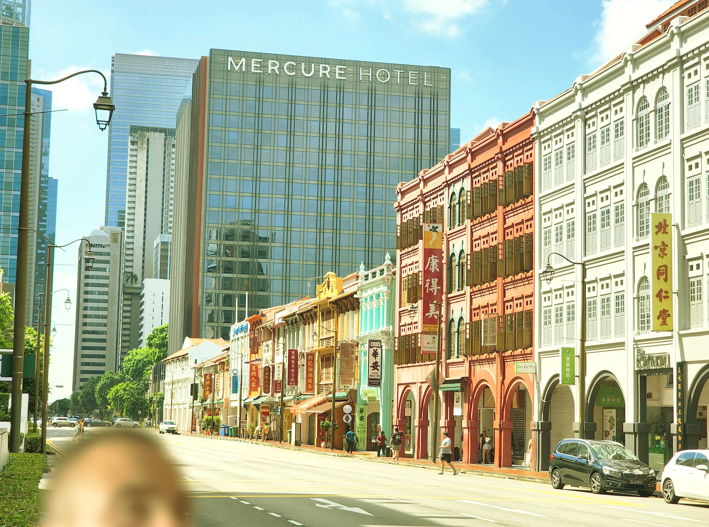
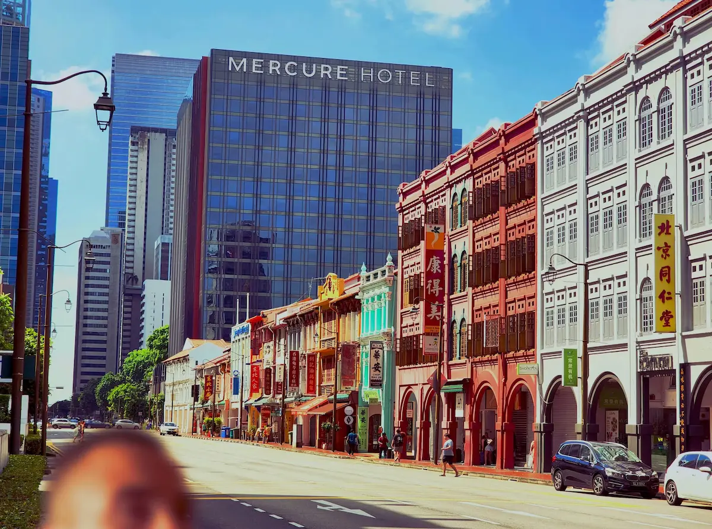
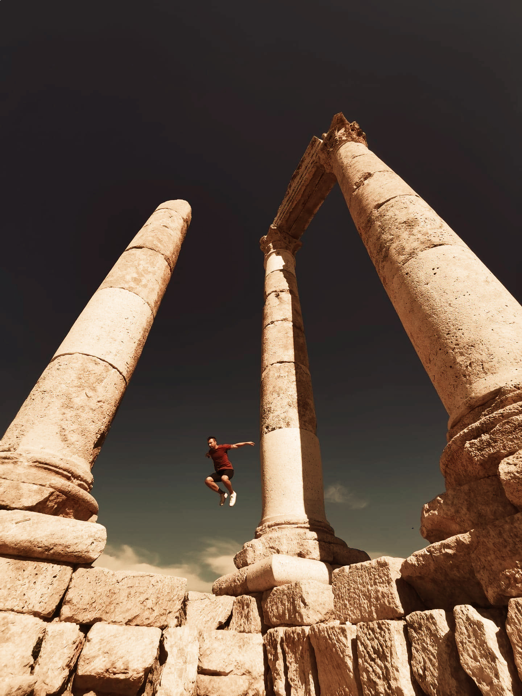
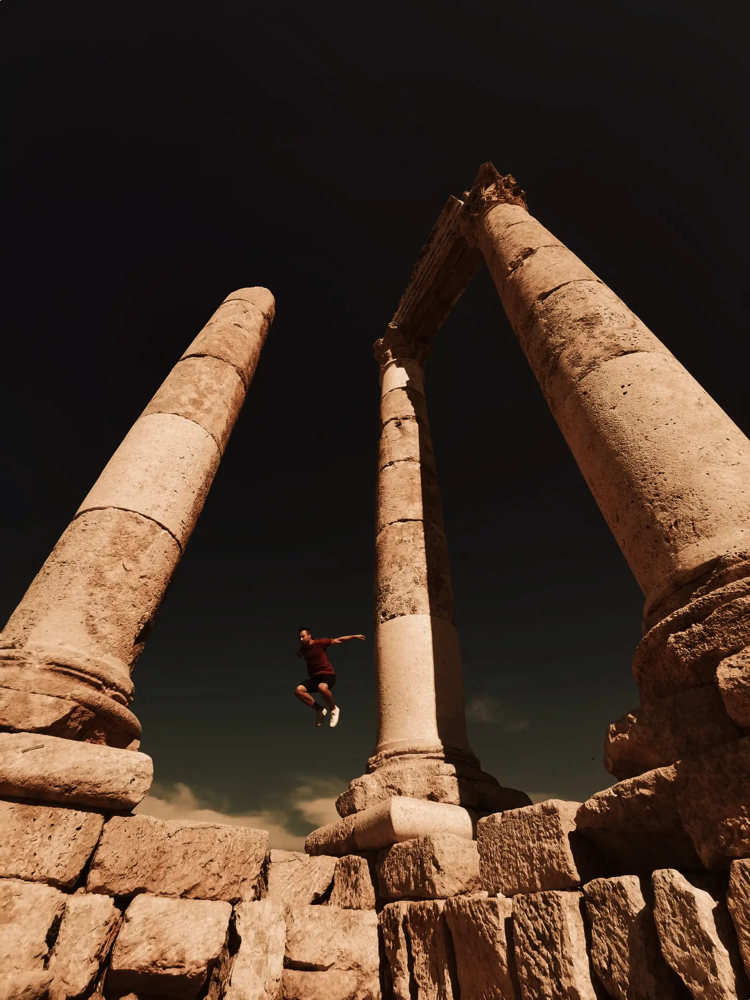
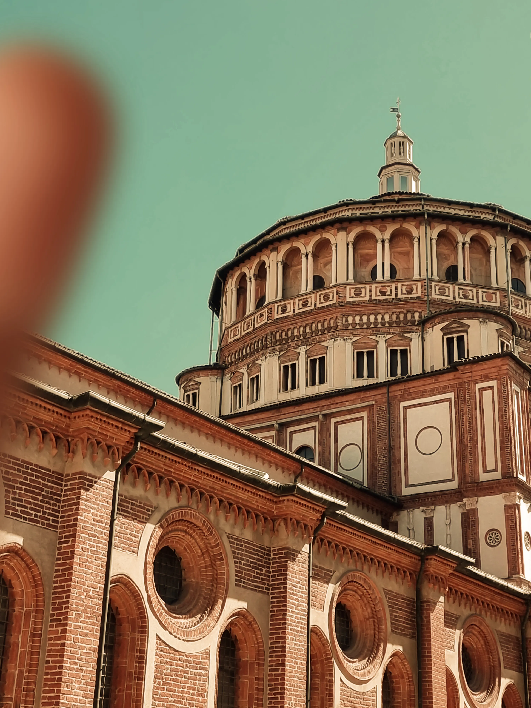

Små ögonblick och stora känslor


I denna bilden har jag ökat ljusstyrkan och minskat kontraster.
Gjort bilden mindre grön och röd genom färgbalansering.
Minskat exponeringen.


Minskat ljusheten och ökat kontrasten

Här har jag tagit bort små detaljer på byggnaden. (cirkel)